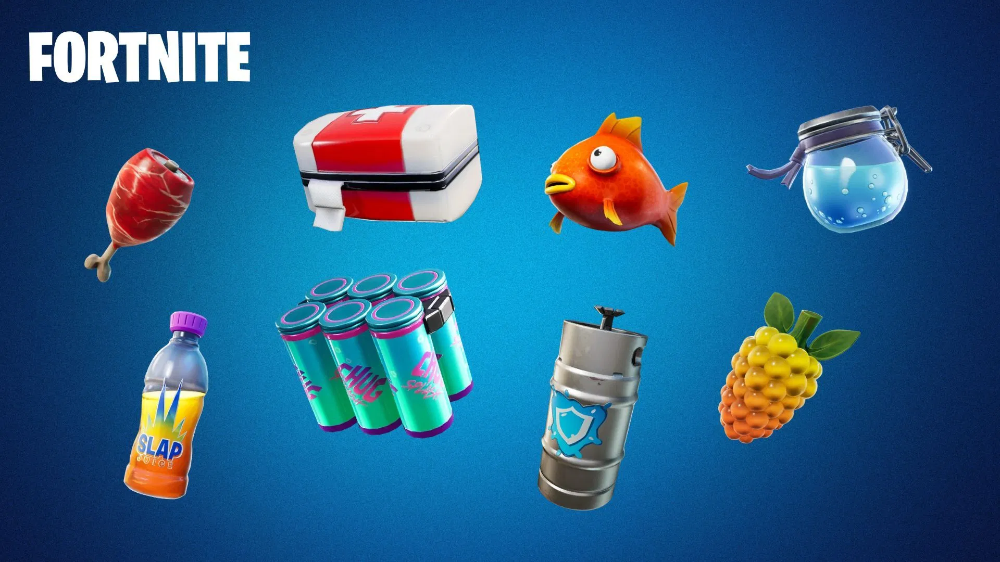

Itens de recuperação
- Poções de escudo
- Kits médicos
- Bandagens
- Peixes

Itens de mobilidade
Alguns itens permitem que os jogadores se movimentem rapidamente pelo mapa e escapem de situações perigosas.
Importância dos itens
Saber quais itens utilizar durante uma partida pode ajudar o jogador a sobreviver por mais tempo.